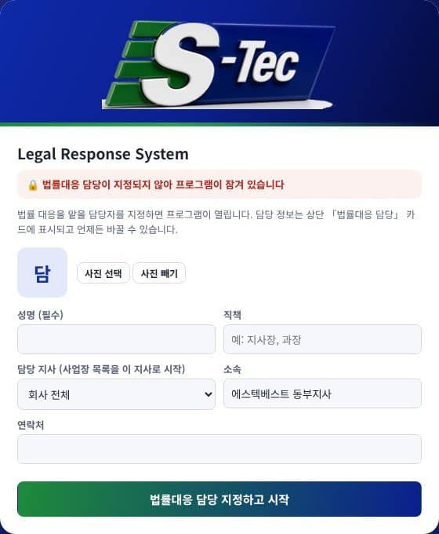
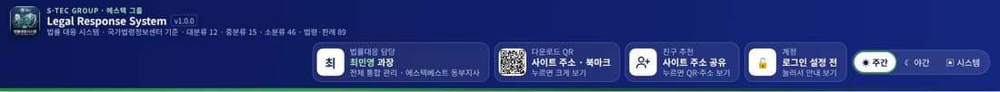
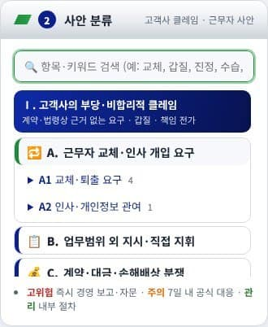
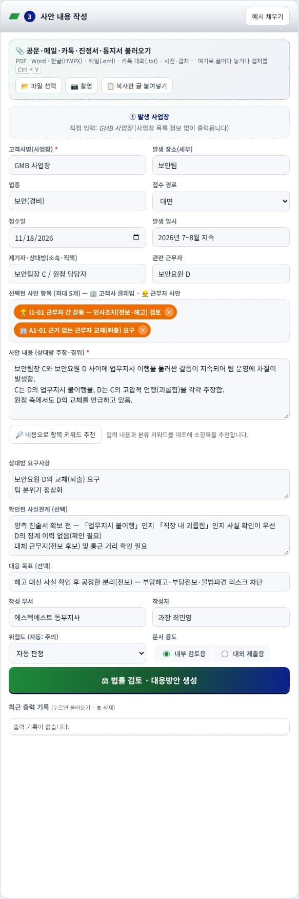
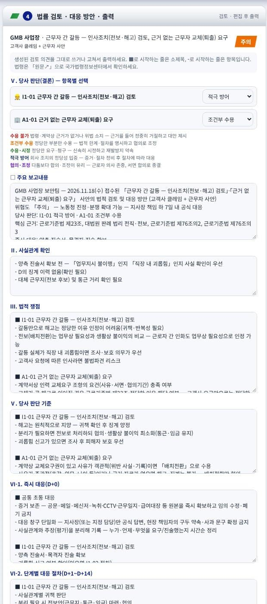
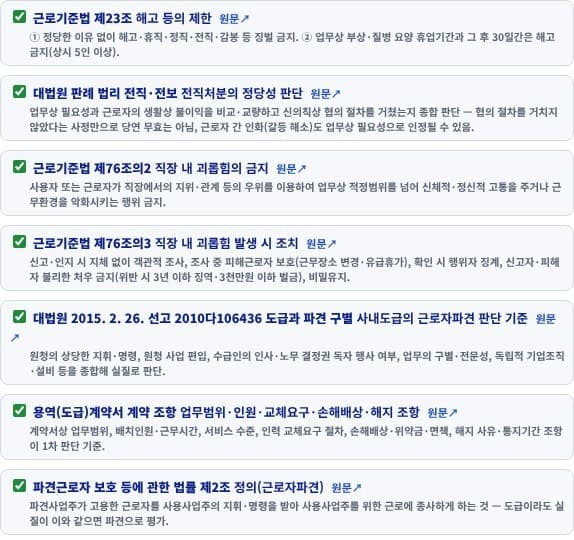

에스텍 그룹 · 사용자 매뉴얼
Legal Response System (법률 대응 시스템)
사용자 매뉴얼
고객사 부당 클레임 · 근무자 사안 법률 검토와 대응방안 작성

v1.0.0 · 2026.11.18 · 작성 에스텍베스트 동부지사
□ 목차 1. 프로그램 소개 2. 설치와 접속 3. 로그인 4. 처음 실행 — 법률대응 담당 지정 5. 상단 기능 6. ① 발생 사업장 선정 7. ② 사안 분류 8. 대표 사례로 바로 시작 9. 접수 원문 불러오기 10. ③ 사안 내용 작성 11. ④ 법률 검토 생성 · 편집 12. 관계 법령 · 판례 확인 13. 문서 용도와 출력 14. ⑤ 근무자 조치 문서 15. 출력 기록 관리 16. 다운로드 QR · 친구 추천 · 화면 17. 자주 묻는 질문 |
1. 프로그램 소개
정당한 Complaint 외에 대응이 난감한 두 가지 사안 — 고객사의 부당·비합리적 클레임과 근무자로 인해 생긴 노무·법률 사안 — 의 법적 근거와 대응방안을 만들어 Word·PPT·PDF로 출력합니다.
▲ 메인 화면 — ① 사업장 · ② 사안 분류 · ③ 내용 작성 · ④ 법률 검토·출력
▶ 처리 순서
단계 | 하는 일 |
|---|---|
① 발생 사업장 선정 | 에스텍베스트 사업장 151곳에서 고르거나 직접 입력 |
② 사안 분류 | 고객사 클레임 / 근무자 사안 중 해당 소항목 선택(최대 5개) |
③ 사안 내용 작성 | 상대방 주장·요구, 확인된 사실, 대응 목표 입력 |
④ 법률 검토·출력 | 쟁점·법령·당사 판단·대응 절차·회신문(안) 검토 후 Word·PPT·PDF 출력 |
⑤ 근무자 조치 문서 | 근무자 귀책 사안이면 징계 양정·절차 문서를 따로 출력(내부) |
💡 법령은 국가법령정보센터(law.go.kr) 현행 법령 기준이며, 출력 문서의 각 법령에 원문 링크가 들어갑니다. |
2. 설치와 접속
웹 주소, PC 앱, 안드로이드 앱, 통합관리 시스템 메뉴 네 가지 방법으로 씁니다. 모두 같은 아이디로 로그인합니다.
방법 | 주소 · 방법 | 비고 |
|---|---|---|
웹 버전 | https://sadness500-boop.github.io/S-Tec-Legal-Response-System/ | 크롬·엣지 권장 |
PC 앱 | 웹 주소를 크롬으로 연 뒤 주소창 오른쪽 「앱 설치」 | 바탕화면 아이콘 생성 |
안드로이드 앱 | https://github.com/sadness500-boop/S-Tec-Legal-Response-System/releases/download/app-latest/stlr-latest.apk | 「출처를 알 수 없는 앱 설치」 허용 |
통합관리 시스템 | 메인 화면 8번째 카드 「Legal Response System」 | 다시 로그인 없이 바로 실행 |
💡 안드로이드 설치 중 Play 프로텍트 경고가 나오면 「무시하고 설치」를 누르세요. 새 버전은 지우지 않고 덮어 설치합니다. |
3. 로그인
에스텍 통합 로그인 — 근태관리 등 에스텍 프로그램과 같은 아이디를 씁니다.
▶ 순서
1. 처음이면 「가입 신청」 → 이메일·비밀번호·성명·연락처·소속 입력
2. 제작자(관리자)가 가입을 승인하고 「법률 대응」 사용 권한을 주면 사용 가능
3. 아이디(이메일)·비밀번호 입력 → 「이 기기 이름」(예: 회사 PC) 확인 → 로그인
4. 비밀번호를 잊으면 「비밀번호를 잊었어요」 → 메일로 재설정, 또는 제작자에게 임시 비밀번호 요청
💡 「이 프로그램 사용 권한이 없습니다」 화면이 나오면 제작자·관리자에게 「법률 대응」 권한을 요청하세요. |
4. 처음 실행 — 법률대응 담당 지정
법률대응 담당이 지정되어야 프로그램이 열립니다. 담당 정보는 출력 문서의 「대응 책임자」에 들어갑니다.

▲ 법률대응 담당 지정 화면
▶ 순서
1. 사진(선택) · 성명(필수) · 직책 입력
2. 담당 지사 선택 — 사업장 목록이 이 지사로 시작(회사 전체도 가능)
3. 소속 · 연락처 입력 후 「법률대응 담당 지정하고 시작」
4. 나중에 바꾸려면 상단 「법률대응 담당」 카드를 누릅니다
5. 상단 기능
근태관리·Complaint 프로그램과 같은 상단 카드입니다.

▲ 상단 카드
카드 | 기능 |
|---|---|
법률대응 담당 | 담당자 사진·성명·직책·소속 변경 |
다운로드 QR | 웹 주소·안드로이드 앱 QR 크게 보기 |
친구 추천 | 주소와 추천 메시지 복사(카카오톡·문자로 공유) |
계정 | 로그인 정보 · 관리자 페이지(제작자·관리자) |
주간·야간·시스템 | 화면 밝기 테마 선택 |
6. ① 발생 사업장 선정
사안이 발생한 사업장을 고르면 고객사명·업종이 자동으로 채워지고, 출력물에 사업장 정보가 들어갑니다.

▲ ① 발생 사업장 선정
▶ 순서
1. 지사 버튼(전체·동부·서부·남부·중부)으로 좁히기
2. 검색창에 사업장명·주소·업종 입력
3. 목록에서 선택 → ③ 위쪽에 사업장 정보(주소·계약일·인원) 표시
4. 카카오맵 점을 눌러도 선택 가능
5. 목록에 없으면 「목록에 없는 사업장 직접 입력」
7. ② 사안 분류
두 갈래 · 대분류 12 · 소분류 46개 중 해당 항목을 최대 5개까지 고릅니다. 고른 항목의 쟁점·법령·대응 절차가 자동으로 적용됩니다.

▲ ② 사안 분류 — Ⅰ 고객사 클레임(파랑) · Ⅱ 근무자 사안(초록)
○ 검색창에 키워드 입력: 교체, 갑질, 진정, 수습, 산재, 감액 등
○ 위험도 표시: 고위험(빨강) 즉시 경영 보고·자문 / 주의(주황) 7일 내 공식 대응 / 관리(초록) 내부 절차
○ ③에서 내용을 쓴 뒤 「🔎 내용으로 항목 키워드 추천」을 눌러도 항목이 추천됩니다
○ 선택한 항목은 ③의 「선택된 사안 항목」에 🏢(고객사) · 👷(근무자)로 표시
▶ 대분류 한눈에 보기
코드 | 구분 | 대분류 | 대표 항목 |
|---|---|---|---|
A | 고객사 클레임 | 근무자 교체·인사 개입 요구 | 근거 없는 교체, 해고·징계 요구, 차별 배치, 노조원 배제 |
B | 고객사 클레임 | 업무범위 외 지시·직접 지휘 | 범위 밖 업무, 직접 지시·근태관리, 휴게 중 대기, 무상 연장근무 |
C | 고객사 클레임 | 계약·대금·손해배상 분쟁 | 일방 감액, 과도한 위약금, 단가 미반영, 계약 해지, 전액 배상 |
D | 고객사 클레임 | 고객사 직원 갑질·폭언·성희롱 | 반복 폭언·모욕, 폭행·위협, 성희롱 |
E | 고객사 클레임 | 사고 책임 전가·부당 요구 | 시설 결함 책임 전가, 도난 배상, CCTV 무단 제공 요구 |
F | 근무자 사안 | 노동청 진정·임금 분쟁 | 임금체불, 휴게시간, 퇴직금·연차, 최저임금·계약서 |
G | 근무자 사안 | 해고·계약종료·수습 | 수습 종료, 기간 만료, 용역 종료, 부당해고, 사직 다툼 |
H | 근무자 사안 | 산업재해·사고 | 산재·공상, 산재 취하·복직, 제3자 가해, 중대재해 |
I | 근무자 사안 | 직장 내 갈등·괴롭힘 | 근무자 간 갈등 인사조치, 괴롭힘 신고, 성희롱·폭행 |
J | 근무자 사안 | 근무자 비위·형사 사건 | 절도·횡령 의혹, 과잉 물리력, 정보 유출, 비방 |
K | 근무자 사안 | 근태·인사명령 분쟁 | 무단결근, 전보 거부, 고령 근무자 업무 적합성 |
L | 근무자 사안 | 노동조합·집단 분쟁 | 노조 결성·교섭, 원청 대상 교섭·쟁의 |
8. 대표 사례로 바로 시작
④ 칸에는 대응이 난감했던 대표 사례 6가지가 있습니다. 누르면 ② 항목과 ③ 내용이 자동으로 채워집니다.

▲ 대표 사례 카드
사례 | 선택되는 항목 |
|---|---|
부산 일본영사관 — 영사관 직원 갑질 대응 | D1-01 |
GMB 사업장 — 보안팀 갈등에 따른 인사조치 | I1-01 · A1-01 |
대한제강 — 경비원 B 산재 철회 후 복직 요청 | H1-02 · H1-03 |
노동청 진정 — 휴게시간·야간수당 미지급 | F1-02 · F1-01 |
수습 종료 통보 — 본채용 거부 다툼 | G1-01 · G2-03 |
고객사 계약 해지 통보 + 근무자 고용 종료 | C2-01 · C1-01 · G1-03 |
💡 사례 내용은 예시입니다. 반드시 실제 사업장·일시·사실관계로 고친 뒤 생성하세요. ③ 상단 「예시 채우기」는 첫 번째 사례를 불러옵니다. |
9. 접수 원문 불러오기
공문·메일·카톡·진정서·통지서를 파일로 올리면 내용을 읽어 ③ 작성 칸을 자동으로 채우고, 원문은 출력물 「붙임」으로 들어갑니다.

▲ ③ 맨 위 — 접수 원문 불러오기
▶ 순서
1. 「📂 파일 선택」 또는 파일을 끌어다 놓기
2. 카톡·공문 화면은 캡처 후 프로그램 화면에서 Ctrl+V, 휴대폰은 「📷 촬영」
3. 메일·카톡 글은 복사 후 「📋 복사한 글 붙여넣기」
4. 확인 창에서 틀린 칸을 고치고 「③에 채우기」 → 사안 항목 자동 추천
○ 읽을 수 있는 파일: PDF(스캔본 포함) · Word · 한글(HWPX) · 메일(.eml) · 카톡 대화(.txt) · 사진/캡처
○ 모든 글자 인식은 기기 안에서만 처리되며 외부로 보내지 않습니다
10. ③ 사안 내용 작성
상대방(고객사·근로자·노동청)의 주장과 요구를 그대로 적고, 확인된 사실을 따로 한 줄씩 적습니다.

▲ ③ 사안 내용 작성
칸 | 작성 요령 |
|---|---|
고객사명 · 발생 장소 | ① 선택 시 자동 입력 / 세부 장소(정문 초소, 보안팀 등) |
제기자·상대방 | 총무팀 이사, 근로감독관, 근로자 본인 등 |
사안 내용 * | 상대방 주장과 경위를 원문 그대로(평가·감정 표현 제외) |
상대방 요구사항 | 교체·해고 요구, 임금 차액, 복직 등 |
확인된 사실관계 | 계약서·근로계약서·CCTV·진술서로 확인된 사실만 |
대응 목표 | 예: 계약 유지 + 재발 방지 / 처벌불원 종결 |
위험도 · 문서 용도 | 위험도는 자동 판정 / 내부 검토용 · 대외 제출용 선택 |
💡 「주장」과 「사실」을 섞지 않는 것이 법적 대응의 출발점입니다. 확인되지 않은 내용은 사실관계 칸에 쓰지 마세요. |
11. ④ 법률 검토 생성 · 편집
「⚖ 법률 검토 · 대응방안 생성」을 누르면 오른쪽에 검토 초안이 나옵니다. 고친 내용이 그대로 출력됩니다.

▲ ④ 검토 결과 편집 화면
▶ 순서
1. 맨 위 「당사 판단」에서 항목별 결론을 확인·변경
2. 주요 보고내용 · 사실관계 · 법적 쟁점 · 판단 기준을 검토
3. 즉시 대응(D+0) · 단계별 절차(D+1~14) · 재발방지를 현장에 맞게 수정
4. 준비 서류 체크리스트 · 회신·통지(안) 문안 다듬기
5. 관계 법령·판례에서 출력할 항목 체크 → 출력
▶ 당사 판단 5가지
판단 | 의미 |
|---|---|
수용 불가 | 법령·계약상 근거가 없거나 위법 소지 — 근거를 들어 정중히 거절하고 대안 제시 |
조건부 수용 | 정당한 부분만 수용 — 법적 한계·절차를 명시하고 협의로 조정 |
수용·시정 | 정당한 요구·청구 — 신속히 시정하고 재발방지 약속 |
적극 방어 | 회사 조치의 정당성 입증 — 증거·절차 정비 후 절차에 따라 대응 |
협의·조정 | 다툼보다 합의가 유리 — 근로자 의사 존중, 서면 합의로 종결 |
💡 편집 칸에서 「■」로 시작하는 줄은 소제목, 「-」로 시작하는 줄은 항목으로 출력됩니다. |
12. 관계 법령 · 판례 확인
고른 항목에 맞는 법령·판례가 자동으로 붙습니다(89개 라이브러리). 각 항목의 「원문↗」을 누르면 국가법령정보센터 조문·판례 검색이 열립니다.

▲ 관계 법령·판례 선택
○ 근로기준법 · 파견법 · 노동조합법(2026. 3. 10. 개정 시행) · 산업안전보건법 · 중대재해처벌법 · 산재보험법 · 경비업법 · 민법 · 형법 등
○ 최저임금: 2026년 시간급 10,320원 · 2027년 10,700원 반영
○ 대법원 판례는 판례 번호와 판례 검색 링크를 함께 표시 — 사용 전 원문 확인
○ Word 문서의 법령 표에도 「원문 보기 ↗」 링크가 들어갑니다
💡 법령 요약은 실무 참고용입니다. 해고·산재·형사 등 고위험 사안은 적용 전에 원문을 확인하고 공인노무사·변호사 자문을 받으세요. |
13. 문서 용도와 출력
Word(머리글·바닥글 서식) · PPT(16:9) · PDF(PPT와 같은 디자인) 3종을 따로 또는 한 번에 출력합니다.

▲ 출력 예시 — PPT·PDF 슬라이드
○ 파일 이름: 연월일_고객사_법률대응방안(내부/대외).docx · .pptx · .pdf
○ 회신문은 고객사 클레임이면 「고객사 회신(안)」, 근무자 사안이면 「근로자 안내·통지(안)」
○ 휴대폰 앱에서는 「저장·보내기」 창으로 저장하거나 카카오톡으로 보냅니다
구성 | 내부 검토용 | 대외 제출용 |
|---|---|---|
주요 보고내용 · 사안 개요 · 사업장 정보 | ○ | ○ (위험도 제외) |
사실관계 · 법적 쟁점 · 관계 법령·판례 | ○ | ○ |
당사 법적 판단 · 대응 방안 · 준비 서류 | ○ | ○ |
리스크 및 내부 유의사항(대외비) | ○ | × |
실행 일정(D+0~D+30) · 회신·통지(안) | ○ | ○ |
붙임: 접수 원문 | ○ | ○ |
14. ⑤ 근무자 조치 문서
갈등·비위·근태 등 근무자 귀책이 있는 사안을 고르면 ④ 아래에 나타납니다. 법률 검토 문서와 따로 출력하는 내부·대외비 문서입니다.

▲ ⑤ 근무자 조치 문서
▶ 순서
1. 대상 근무자 성명 · 직책 · 입사일 · 근무형태 입력
2. 위반 이력 선택(초범 / 재위반 / 3회 이상) → 조치 수준 자동 권고
3. 필요하면 조치 수준을 직접 선택, 시행 예정일·추가 조치 체크
4. 면담 후 근무자 소명 요지·조치 사유 기재 → Word · PPT · PDF 출력
💡 징계는 「정당한 이유 + 공정한 절차(소명·징계위원회) + 서면 통지」를 반드시 갖추세요. 고객사 요구만으로 징계·해고하면 부당해고 위험이 큽니다. |
15. 출력 기록 관리
출력할 때마다 기록이 남습니다. 로그인하면 다른 기기에서도 같은 기록이 보입니다.

▲ 최근 출력 기록
○ 기록을 누르면 사업장·항목·내용·판단을 다시 불러옴 → 「법률 검토 생성」
○ 🗑 한 건 삭제 · 체크 후 「선택 삭제」 · 「전체 삭제」
○ 삭제한 기록은 되살릴 수 없습니다(로그인 시 모든 기기에서 함께 삭제)
16. 다운로드 QR · 친구 추천 · 화면
동료에게 프로그램을 알려 주고, 휴대폰에서도 같은 아이디로 씁니다.
▲ 다운로드 QR
○ 다운로드 QR: 「웹 버전」 / 「안드로이드 앱(APK)」 전환, 주소 복사
○ 친구 추천: QR과 추천 메시지(카카오톡·문자용) 복사
○ 주간 · 야간 · 시스템: 화면 밝기 선택(기기에 저장)
17. 자주 묻는 질문
문제가 생기면 먼저 아래를 확인하세요.
질문 | 답변 |
|---|---|
프로그램이 잠겨 있어요 | 법률대응 담당 지정 또는 「법률 대응」 사용 권한이 필요합니다(제작자·관리자에게 요청) |
사업장이 목록에 없어요 | 「목록에 없는 사업장 직접 입력」 후 고객사명을 적으면 사업장 정보 없이 출력됩니다 |
항목을 5개 넘게 고를 수 없어요 | 한 문서에는 최대 5개 — 사안이 많으면 나누어 작성하세요 |
당사 판단을 바꾸고 싶어요 | ④ 맨 위 「당사 판단」에서 항목별로 바꾸면 문서 전체에 반영됩니다 |
⑤ 근무자 조치 문서가 안 보여요 | 근무자 귀책 항목(갈등·비위·근태·배상 등)을 고른 경우에만 나타납니다 |
법령이 최신인지 궁금해요 | 「원문↗」으로 국가법령정보센터에서 현행 조문을 확인하세요 |
휴대폰에서 파일이 안 받아져요 | 「저장·보내기」 창에서 「파일에 저장」 또는 카카오톡 보내기를 고르세요 |
화면이 예전 그대로예요 | PC는 Ctrl+F5(새로고침), 앱은 최신 APK로 덮어 설치 |
- 끝 -
※ 법령·판례 요약은 국가법령정보센터(law.go.kr) 기준 실무 참고용이며 법률 자문을 대체하지 않습니다. | Legal Response System v1.0.0 | Designed & Developed by Rat Rae Choi